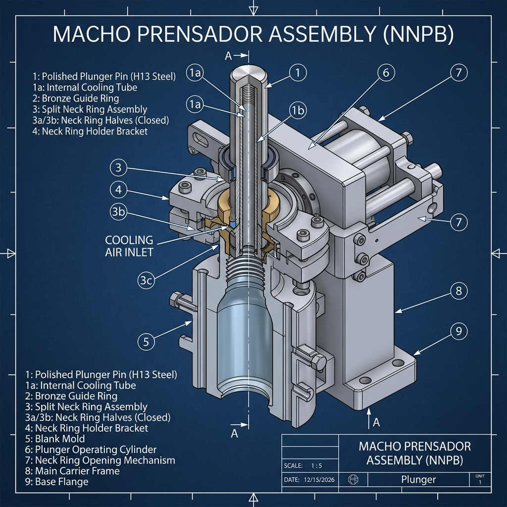

Laboratorio de Diagnóstico 🔍
Cargando caso...
Esperando datos de telemetría...
¿Cuál es la causa raíz o el ajuste necesario?
Consola de Temporización BDF ⏱️
Secuenciador Electrónico I.S. — Parámetros Oficiales NNPB / Cristal ChileDiagrama Gantt de Ciclo 360°
Visualización en grados de la secuencia de mecanismos en tiempo real.
0°
90°
180°
270°
360°
Prensado Macho
0°-70°
Inversión Parison
90°-120°
Molde de Soplo
120°-330°
Soplado Final
140°-200°
Matriz de Eventos NNPB (0° - 360°)
Explorador de Anatomía I.S. (3D) 📚
Despiece e Inspección de Mecanismos de Sección NNPB & Soplo-Soplo
📷 Moldería y Mecanismos Reales I.S. (Cristal Chile)

Selecciona un Mecanismo
Haz clic en la lista para inspeccionar la moldería real y la cinemática en 3D.